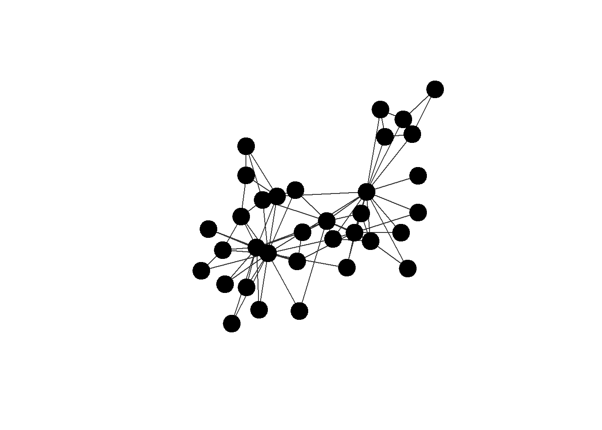
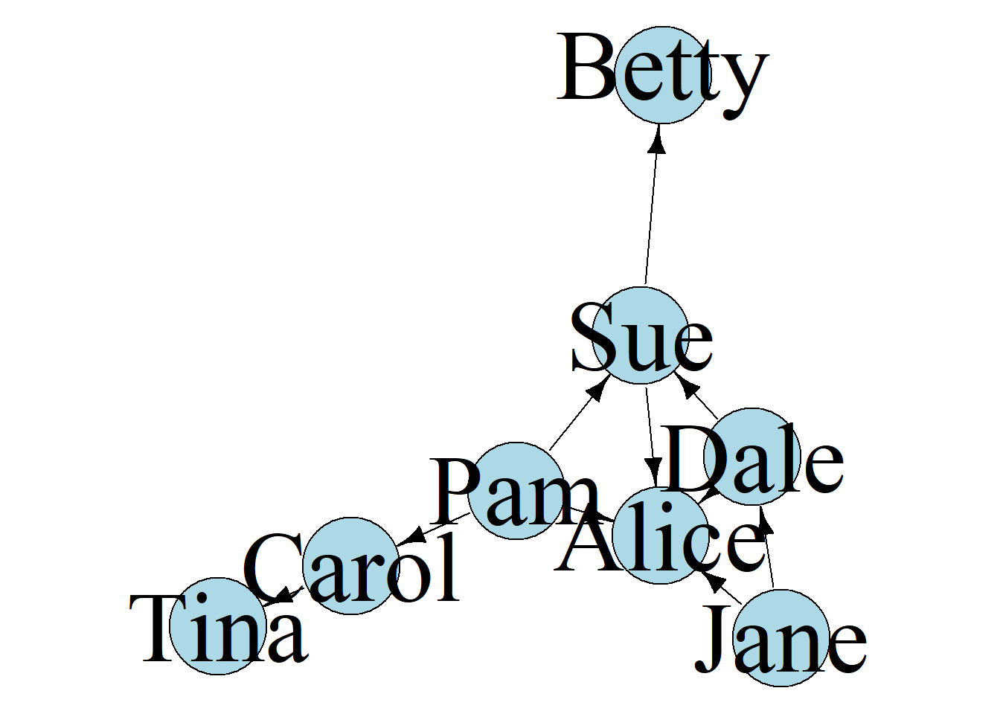
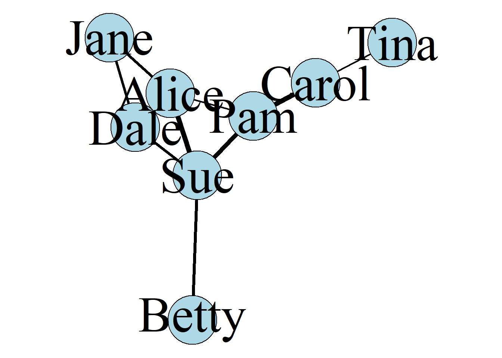
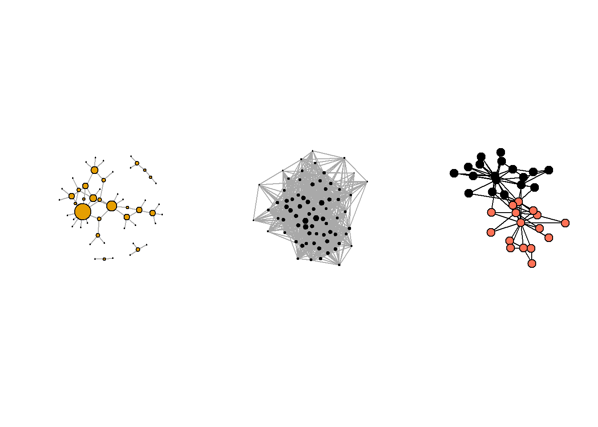
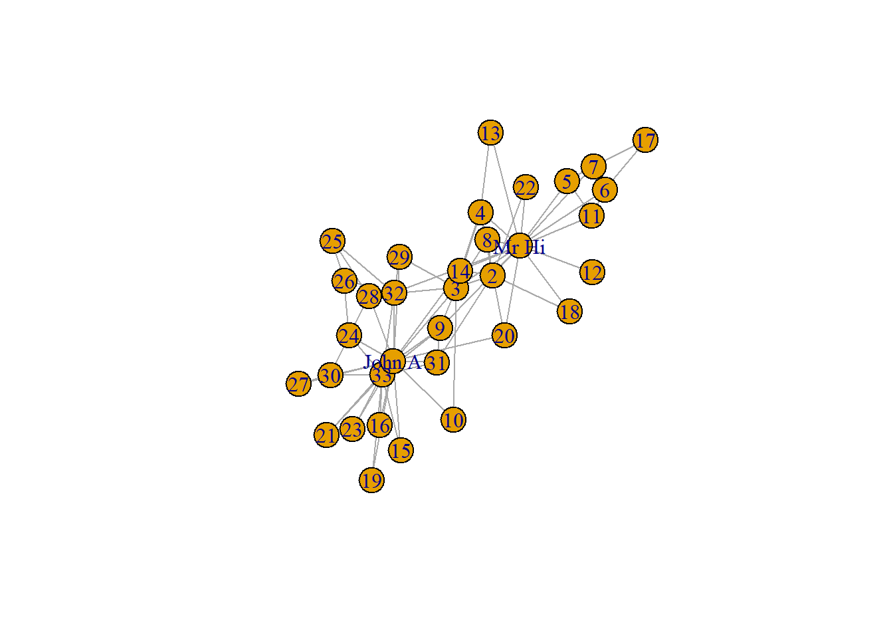
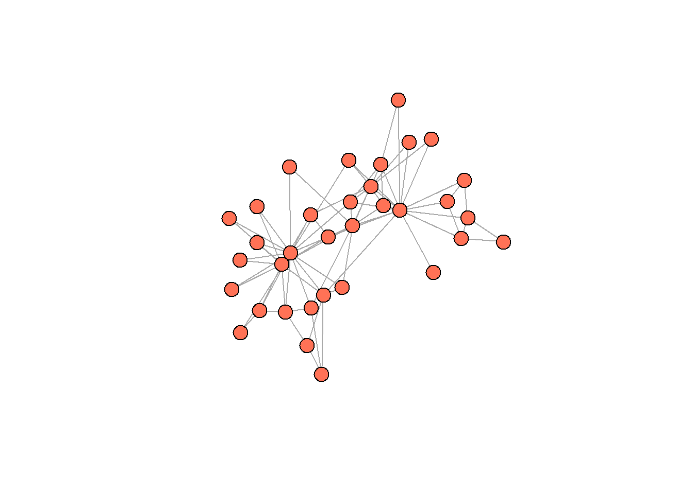
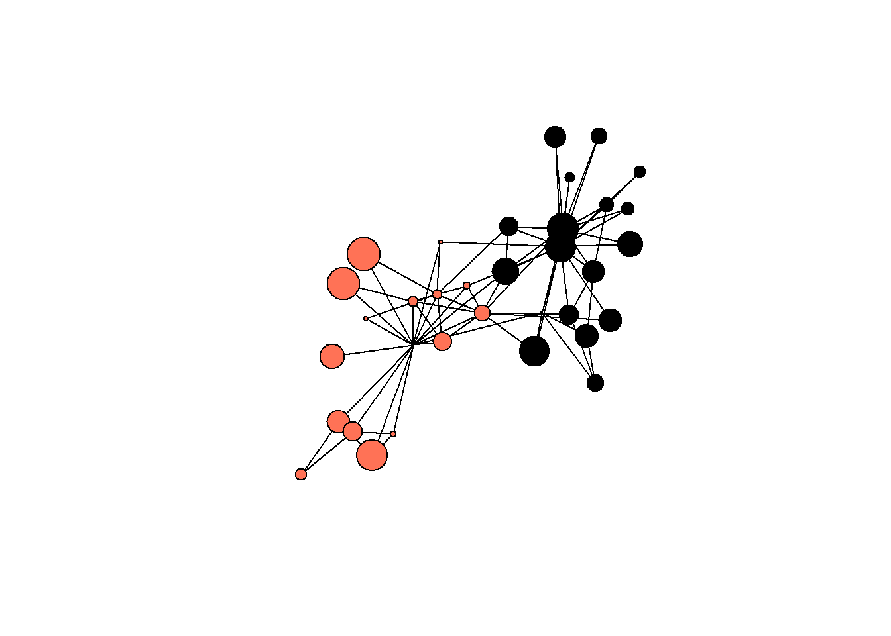
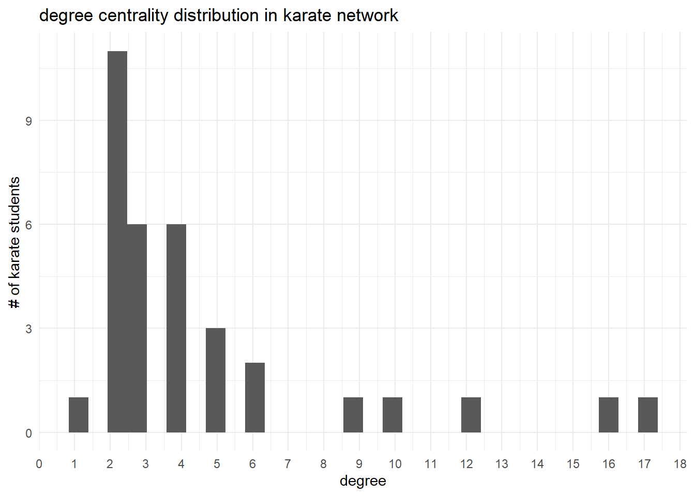
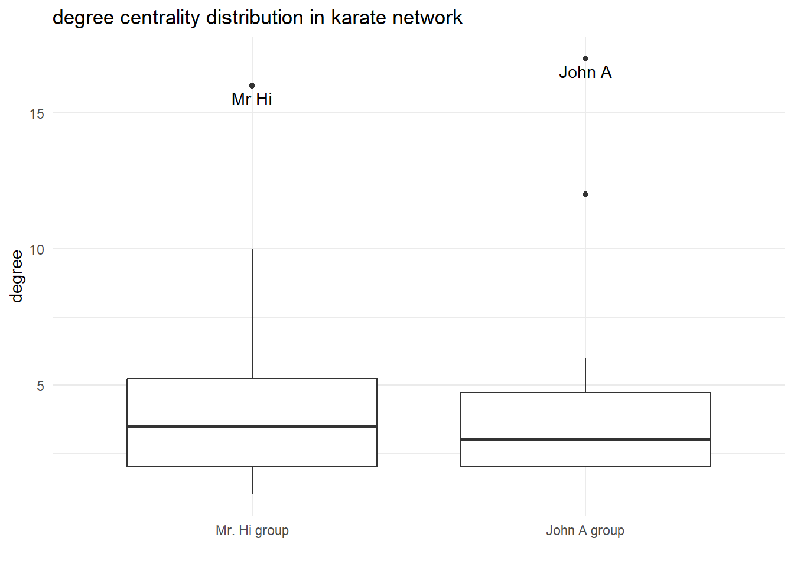

Chapter 1
This is the first chapter. Hey!
0.1 Libraries
# load missing packages:
#install.packages("igraph")
#install.packages("intergraph")
#install.packages("manynet")
library(tidyverse) ## general package to work in R
#> ── Attaching core tidyverse packages ──── tidyverse 2.0.0 ──
#> ✔ dplyr 1.1.4 ✔ readr 2.1.5
#> ✔ forcats 1.0.0 ✔ stringr 1.5.1
#> ✔ ggplot2 3.5.1 ✔ tibble 3.2.1
#> ✔ lubridate 1.9.4 ✔ tidyr 1.3.1
#> ✔ purrr 1.0.4
#> ── Conflicts ────────────────────── tidyverse_conflicts() ──
#> ✖ dplyr::filter() masks stats::filter()
#> ✖ dplyr::lag() masks stats::lag()
#> ℹ Use the conflicted package (<http://conflicted.r-lib.org/>) to force all conflicts to become errors
library(igraph) ## general package for network analysis
#>
#> Присоединяю пакет: 'igraph'
#>
#> Следующие объекты скрыты от 'package:lubridate':
#>
#> %--%, union
#>
#> Следующие объекты скрыты от 'package:dplyr':
#>
#> as_data_frame, groups, union
#>
#> Следующие объекты скрыты от 'package:purrr':
#>
#> compose, simplify
#>
#> Следующий объект скрыт от 'package:tidyr':
#>
#> crossing
#>
#> Следующий объект скрыт от 'package:tibble':
#>
#> as_data_frame
#>
#> Следующие объекты скрыты от 'package:stats':
#>
#> decompose, spectrum
#>
#> Следующий объект скрыт от 'package:base':
#>
#> union
library(intergraph) ## convert from df to graph-objects and vice versa
library(manynet) ## datasets
#>
#> Присоединяю пакет: 'manynet'
#>
#> Следующие объекты скрыты от 'package:igraph':
#>
#> as_edgelist, is_acyclic, is_connected,
#> is_directed, is_weighted, print_all
#>
#> Следующий объект скрыт от 'package:purrr':
#>
#> is_list
library(ggplot2) ## tidy approach to viz0.2 Presentation pictures
Friendship among 8 girls:
set.seed(31)
#png(
# "presentation_pic1.png",
# width = 8,
# height = 4,
# units = "in",
# res = 800,
# pointsize = 4
#)
par(mar=c(0,0,0,0))
manynet::ison_adolescents %>%
plot(vertex.color = "lightblue",
vertex.size = 35,
vertex.label.cex = 4.2,
edge.size = 30,
edge.color = "black",
vertex.label.color = "black")
#dev.off()Similar group, but with randomly generated directed ties:
set.seed(31)
#png(
# "presentation_pic2.png",
# width = 8,
# height = 4,
# units = "in",
# res = 800,
# pointsize = 4
#)
par(mar=c(0,0,0,0))
ison_adolescents %>%
as_directed(mode = "random") %>%
plot(vertex.color = "lightblue",
vertex.size = 35,
vertex.label.cex = 4.2,
edge.size = 30,
edge.color = "black",
vertex.label.color = "black")
#dev.off()Similar group, but with randomly generated weights for ties:
set.seed(31)
E(ison_adolescents)$weight <- runif(length(E(ison_adolescents)), 1, 7)
#png(
# "presentation_pic3.png",
# width = 8,
# height = 4,
# units = "in",
# res = 800,
# pointsize = 4
#)
par(mar=c(0,0,0,0))
ison_adolescents %>%
plot(vertex.color = "lightblue",
vertex.size = 35,
vertex.label.cex = 4.2,
edge.size = 30,
edge.width = E(ison_adolescents)$weight,
edge.color = "black",
vertex.label.color = "black")
#dev.off()Guess the nature of the network:
## grey's anatomy tv show - 21 seasons!
V(fict_greys)$degree = igraph::degree(fict_greys, mode = "all")
## low-firm
ison_lawfirm <- ison_lawfirm %>%
as_undirected() #%>%
V(ison_lawfirm)$degree = igraph::degree(ison_lawfirm,
mode = "all")
## karate:
data(ison_karateka)
## drawing:
#png(
# "presentation_pic4.png",
# width = 8,
# height = 4,
# units = "in",
# res = 800,
# pointsize = 4
#)
par(mfrow = c(1,3))
## 1:
fict_greys %>%
plot(vertex.label = NA,
vertex.size = V(fict_greys)$degree*3)
## 2:
ison_lawfirm %>%
plot(vertex.label = NA,
vertex.color = "black",
vertex.size = V(ison_lawfirm)$degree/5,
edge.size = 3)
## 3:
ison_karateka %>%
plot(vertex.label = NA,
vertex.color = ifelse(V(ison_karateka)$allegiance %in% 1,
"coral1",
"black"),
edge.color = "black")
#dev.off()0.3 Practice
Data organization:
## you need to load manynet package to use this data
## matrix:
ison_karateka %>%
as_adj()
#> Warning: `as_adj()` was deprecated in igraph 2.1.0.
#> ℹ Please use `as_adjacency_matrix()` instead.
#> This warning is displayed once every 8 hours.
#> Call `lifecycle::last_lifecycle_warnings()` to see where
#> this warning was generated.
#> 34 x 34 sparse Matrix of class "dgCMatrix"
#> [[ suppressing 34 column names 'Mr Hi', '2', '3' ... ]]
#>
#> Mr Hi . 1 1 1 1 1 1 1 1 . 1 1 1 1 . . . 1 . 1 . 1 . . . .
#> 2 1 . 1 1 . . . 1 . . . . . 1 . . . 1 . 1 . 1 . . . .
#> 3 1 1 . 1 . . . 1 1 1 . . . 1 . . . . . . . . . . . .
#> 4 1 1 1 . . . . 1 . . . . 1 1 . . . . . . . . . . . .
#> 5 1 . . . . . 1 . . . 1 . . . . . . . . . . . . . . .
#> 6 1 . . . . . 1 . . . 1 . . . . . 1 . . . . . . . . .
#> 7 1 . . . 1 1 . . . . . . . . . . 1 . . . . . . . . .
#> 8 1 1 1 1 . . . . . . . . . . . . . . . . . . . . . .
#> 9 1 . 1 . . . . . . . . . . . . . . . . . . . . . . .
#> 10 . . 1 . . . . . . . . . . . . . . . . . . . . . . .
#> 11 1 . . . 1 1 . . . . . . . . . . . . . . . . . . . .
#> 12 1 . . . . . . . . . . . . . . . . . . . . . . . . .
#> 13 1 . . 1 . . . . . . . . . . . . . . . . . . . . . .
#> 14 1 1 1 1 . . . . . . . . . . . . . . . . . . . . . .
#> 15 . . . . . . . . . . . . . . . . . . . . . . . . . .
#> 16 . . . . . . . . . . . . . . . . . . . . . . . . . .
#> 17 . . . . . 1 1 . . . . . . . . . . . . . . . . . . .
#> 18 1 1 . . . . . . . . . . . . . . . . . . . . . . . .
#> 19 . . . . . . . . . . . . . . . . . . . . . . . . . .
#> 20 1 1 . . . . . . . . . . . . . . . . . . . . . . . .
#> 21 . . . . . . . . . . . . . . . . . . . . . . . . . .
#> 22 1 1 . . . . . . . . . . . . . . . . . . . . . . . .
#> 23 . . . . . . . . . . . . . . . . . . . . . . . . . .
#> 24 . . . . . . . . . . . . . . . . . . . . . . . . . 1
#> 25 . . . . . . . . . . . . . . . . . . . . . . . . . 1
#> 26 . . . . . . . . . . . . . . . . . . . . . . . 1 1 .
#> 27 . . . . . . . . . . . . . . . . . . . . . . . . . .
#> 28 . . 1 . . . . . . . . . . . . . . . . . . . . 1 1 .
#> 29 . . 1 . . . . . . . . . . . . . . . . . . . . . . .
#> 30 . . . . . . . . . . . . . . . . . . . . . . . 1 . .
#> 31 . 1 . . . . . . 1 . . . . . . . . . . . . . . . . .
#> 32 1 . . . . . . . . . . . . . . . . . . . . . . . 1 1
#> 33 . . 1 . . . . . 1 . . . . . 1 1 . . 1 . 1 . 1 1 . .
#> John A . . . . . . . . 1 1 . . . 1 1 1 . . 1 1 1 . 1 1 . .
#>
#> Mr Hi . . . . . 1 . .
#> 2 . . . . 1 . . .
#> 3 . 1 1 . . . 1 .
#> 4 . . . . . . . .
#> 5 . . . . . . . .
#> 6 . . . . . . . .
#> 7 . . . . . . . .
#> 8 . . . . . . . .
#> 9 . . . . 1 . 1 1
#> 10 . . . . . . . 1
#> 11 . . . . . . . .
#> 12 . . . . . . . .
#> 13 . . . . . . . .
#> 14 . . . . . . . 1
#> 15 . . . . . . 1 1
#> 16 . . . . . . 1 1
#> 17 . . . . . . . .
#> 18 . . . . . . . .
#> 19 . . . . . . 1 1
#> 20 . . . . . . . 1
#> 21 . . . . . . 1 1
#> 22 . . . . . . . .
#> 23 . . . . . . 1 1
#> 24 . 1 . 1 . . 1 1
#> 25 . 1 . . . 1 . .
#> 26 . . . . . 1 . .
#> 27 . . . 1 . . . 1
#> 28 . . . . . . . 1
#> 29 . . . . . 1 . 1
#> 30 1 . . . . . 1 1
#> 31 . . . . . . 1 1
#> 32 . . 1 . . . 1 1
#> 33 . . . 1 1 1 . 1
#> John A 1 1 1 1 1 1 1 .
## edgelist:
ison_karateka %>%
as_edgelist()
#> # A tibble: 78 × 3
#> from to weight
#> <chr> <chr> <dbl>
#> 1 Mr Hi 2 4
#> 2 Mr Hi 3 5
#> 3 2 3 6
#> 4 Mr Hi 4 3
#> 5 2 4 3
#> 6 3 4 3
#> 7 Mr Hi 5 3
#> 8 Mr Hi 6 3
#> 9 Mr Hi 7 3
#> 10 5 7 2
#> # ℹ 68 more rows
## nodelist:
ison_karateka %>%
as_nodelist()
#> # A tibble: 34 × 2
#> name allegiance
#> <chr> <dbl>
#> 1 Mr Hi 1
#> 2 2 1
#> 3 3 1
#> 4 4 1
#> 5 5 1
#> 6 6 1
#> 7 7 1
#> 8 8 1
#> 9 9 2
#> 10 10 2
#> # ℹ 24 more rowsigraph and intergraph syntax:
## load network:
karate <- ison_karateka
class(karate)
#> [1] "mnet" "tbl_graph" "igraph"
str(karate)
#> Classes 'mnet', 'tbl_graph', 'igraph' hidden list of 10
#> $ : num 34
#> $ : logi FALSE
#> $ : num [1:78] 1 2 2 3 3 3 4 5 6 6 ...
#> $ : num [1:78] 0 0 1 0 1 2 0 0 0 4 ...
#> $ : NULL
#> $ : NULL
#> $ : NULL
#> $ : NULL
#> $ :List of 4
#> ..$ : num [1:3] 1 0 1
#> ..$ :List of 4
#> .. ..$ name : chr "Zachary's karate club network"
#> .. ..$ nodes: chr "club members"
#> .. ..$ ties : chr "association"
#> .. ..$ year : num 1977
#> ..$ :List of 2
#> .. ..$ name : chr [1:34] "Mr Hi" "2" "3" "4" ...
#> .. ..$ allegiance: num [1:34] 1 1 1 1 1 1 1 1 2 2 ...
#> ..$ :List of 1
#> .. ..$ weight: num [1:78] 4 5 6 3 3 3 3 3 3 2 ...
#> $ :<environment: 0x000002f8c5845a78>
#> - attr(*, "active")= chr "nodes"
## convert to data frames
(karate %>%
asDF())
#> $edges
#> V1 V2 weight
#> 1 1 2 4
#> 2 1 3 5
#> 3 2 3 6
#> 4 1 4 3
#> 5 2 4 3
#> 6 3 4 3
#> 7 1 5 3
#> 8 1 6 3
#> 9 1 7 3
#> 10 5 7 2
#> 11 6 7 5
#> 12 1 8 2
#> 13 2 8 4
#> 14 3 8 4
#> 15 4 8 3
#> 16 1 9 2
#> 17 3 9 5
#> 18 3 10 1
#> 19 1 11 2
#> 20 5 11 3
#> 21 6 11 3
#> 22 1 12 3
#> 23 1 13 1
#> 24 4 13 3
#> 25 1 14 3
#> 26 2 14 5
#> 27 3 14 3
#> 28 4 14 3
#> 29 6 17 3
#> 30 7 17 3
#> 31 1 18 2
#> 32 2 18 1
#> 33 1 20 2
#> 34 2 20 2
#> 35 1 22 2
#> 36 2 22 2
#> 37 24 26 5
#> 38 25 26 2
#> 39 3 28 2
#> 40 24 28 4
#> 41 25 28 3
#> 42 3 29 2
#> 43 24 30 3
#> 44 27 30 4
#> 45 2 31 2
#> 46 9 31 3
#> 47 1 32 2
#> 48 25 32 2
#> 49 26 32 7
#> 50 29 32 2
#> 51 3 33 2
#> 52 9 33 3
#> 53 15 33 3
#> 54 16 33 3
#> 55 19 33 1
#> 56 21 33 3
#> 57 23 33 2
#> 58 24 33 5
#> 59 30 33 4
#> 60 31 33 3
#> 61 32 33 4
#> 62 9 34 4
#> 63 10 34 2
#> 64 14 34 3
#> 65 15 34 2
#> 66 16 34 4
#> 67 19 34 2
#> 68 20 34 1
#> 69 21 34 1
#> 70 23 34 3
#> 71 24 34 4
#> 72 27 34 2
#> 73 28 34 4
#> 74 29 34 2
#> 75 30 34 2
#> 76 31 34 3
#> 77 32 34 4
#> 78 33 34 5
#>
#> $vertexes
#> intergraph_id name allegiance
#> 1 1 Mr Hi 1
#> 2 2 2 1
#> 3 3 3 1
#> 4 4 4 1
#> 5 5 5 1
#> 6 6 6 1
#> 7 7 7 1
#> 8 8 8 1
#> 9 9 9 2
#> 10 10 10 2
#> 11 11 11 1
#> 12 12 12 1
#> 13 13 13 1
#> 14 14 14 1
#> 15 15 15 2
#> 16 16 16 2
#> 17 17 17 1
#> 18 18 18 1
#> 19 19 19 2
#> 20 20 20 1
#> 21 21 21 2
#> 22 22 22 1
#> 23 23 23 2
#> 24 24 24 2
#> 25 25 25 2
#> 26 26 26 2
#> 27 27 27 2
#> 28 28 28 2
#> 29 29 29 2
#> 30 30 30 2
#> 31 31 31 2
#> 32 32 32 2
#> 33 33 33 2
#> 34 34 John A 2
karate_edges <- (karate %>%
asDF())$edge
karate_nodes <- (karate %>%
asDF())$vertex
## igraph output after graph creation:
karate_edges %>%
graph_from_data_frame(directed = T)
#> IGRAPH 7a7362e DNW- 34 78 --
#> + attr: name (v/c), weight (e/n)
#> + edges from 7a7362e (vertex names):
#> [1] 1 ->2 1 ->3 2 ->3 1 ->4 2 ->4 3 ->4 1 ->5 1 ->6
#> [9] 1 ->7 5 ->7 6 ->7 1 ->8 2 ->8 3 ->8 4 ->8 1 ->9
#> [17] 3 ->9 3 ->10 1 ->11 5 ->11 6 ->11 1 ->12 1 ->13 4 ->13
#> [25] 1 ->14 2 ->14 3 ->14 4 ->14 6 ->17 7 ->17 1 ->18 2 ->18
#> [33] 1 ->20 2 ->20 1 ->22 2 ->22 24->26 25->26 3 ->28 24->28
#> [41] 25->28 3 ->29 24->30 27->30 2 ->31 9 ->31 1 ->32 25->32
#> [49] 26->32 29->32 3 ->33 9 ->33 15->33 16->33 19->33 21->33
#> [57] 23->33 24->33 30->33 31->33 32->33 9 ->34 10->34 14->34
#> + ... omitted several edges
## add vertices info:
karate_edges %>%
graph_from_data_frame(directed = T,
vertices = karate_nodes)
#> IGRAPH 7a744db DNW- 34 78 --
#> + attr: name (v/c), allegiance (v/n), weight (e/n)
#> + edges from 7a744db (vertex names):
#> [1] Mr Hi->2 Mr Hi->3 2 ->3 Mr Hi->4 2 ->4
#> [6] 3 ->4 Mr Hi->5 Mr Hi->6 Mr Hi->7 5 ->7
#> [11] 6 ->7 Mr Hi->8 2 ->8 3 ->8 4 ->8
#> [16] Mr Hi->9 3 ->9 3 ->10 Mr Hi->11 5 ->11
#> [21] 6 ->11 Mr Hi->12 Mr Hi->13 4 ->13 Mr Hi->14
#> [26] 2 ->14 3 ->14 4 ->14 6 ->17 7 ->17
#> [31] Mr Hi->18 2 ->18 Mr Hi->20 2 ->20 Mr Hi->22
#> [36] 2 ->22 24 ->26 25 ->26 3 ->28 24 ->28
#> + ... omitted several edges
## referring to:
E(karate) ## edges
#> + 78/78 edges from 9e17774 (vertex names):
#> [1] Mr Hi--2 Mr Hi--3 2 --3 Mr Hi--4 2 --4
#> [6] 3 --4 Mr Hi--5 Mr Hi--6 Mr Hi--7 5 --7
#> [11] 6 --7 Mr Hi--8 2 --8 3 --8 4 --8
#> [16] Mr Hi--9 3 --9 3 --10 Mr Hi--11 5 --11
#> [21] 6 --11 Mr Hi--12 Mr Hi--13 4 --13 Mr Hi--14
#> [26] 2 --14 3 --14 4 --14 6 --17 7 --17
#> [31] Mr Hi--18 2 --18 Mr Hi--20 2 --20 Mr Hi--22
#> [36] 2 --22 24 --26 25 --26 3 --28 24 --28
#> [41] 25 --28 3 --29 24 --30 27 --30 2 --31
#> [46] 9 --31 Mr Hi--32 25 --32 26 --32 29 --32
#> + ... omitted several edges
V(karate) ## nodes
#> + 34/34 vertices, named, from 9e17774:
#> [1] Mr Hi 2 3 4 5 6 7 8
#> [9] 9 10 11 12 13 14 15 16
#> [17] 17 18 19 20 21 22 23 24
#> [25] 25 26 27 28 29 30 31 32
#> [33] 33 John A
## assign values:
V(karate)$strength = sample(c(1:100), 34)Simple vizualizations:


## use variables!!
karate %>%
plot(vertex.label = NA,
vertex.size = V(karate)$strength/5, ## random strength
vertex.color = ifelse(V(karate)$allegiance %in% 1,
"coral1",
"black"), ## conflict side
edge.color = "black")
Degree centrality calculation (more on this and other measures in the next lecture):
V(karate)$degree = igraph::degree(karate, mode = "all")
(asDF(karate))$vertex %>%
head()
#> intergraph_id name allegiance strength degree
#> 1 1 Mr Hi 1 5 16
#> 2 2 2 1 30 9
#> 3 3 3 1 49 10
#> 4 4 4 1 31 6
#> 5 5 5 1 20 3
#> 6 6 6 1 68 4Let’s use it to describe our groups of karate-students:
## degree distribution:
(asDF(karate))$vertex %>%
ggplot(aes(degree)) +
geom_histogram() +
theme_minimal() +
scale_x_continuous(breaks = seq(0, 20, 1)) +
labs(title = "degree centrality distribution in karate network",
y = "# of karate students")
#> `stat_bin()` using `bins = 30`. Pick better value with
#> `binwidth`.
## who is the most central?
## average values of degree centrality:
(asDF(karate))$vertex %>%
group_by(allegiance) %>%
summarise(mean_degree = round(mean(degree),2),
mean_strength = round(mean(strength),2))
#> # A tibble: 2 × 3
#> allegiance mean_degree mean_strength
#> <dbl> <dbl> <dbl>
#> 1 1 4.75 48.3
#> 2 2 4.44 59.3
## Is it correct to check for the statistically significant difference?
## degree boxplots for parties:
(asDF(karate))$vertex %>%
mutate(allegiance = as.character(allegiance)) %>%
mutate(caption = ifelse(name %in% c("Mr Hi", "John A"),
str_c("\n", name),
"")) %>%
ggplot(aes(allegiance, degree)) +
geom_boxplot() +
#geom_jitter() +
theme_minimal() +
scale_x_discrete(labels = c("Mr. Hi group", "John A group")) +
labs(title = "degree centrality distribution in karate network",
y = "degree",
x = "") +
geom_text(aes(label = caption))